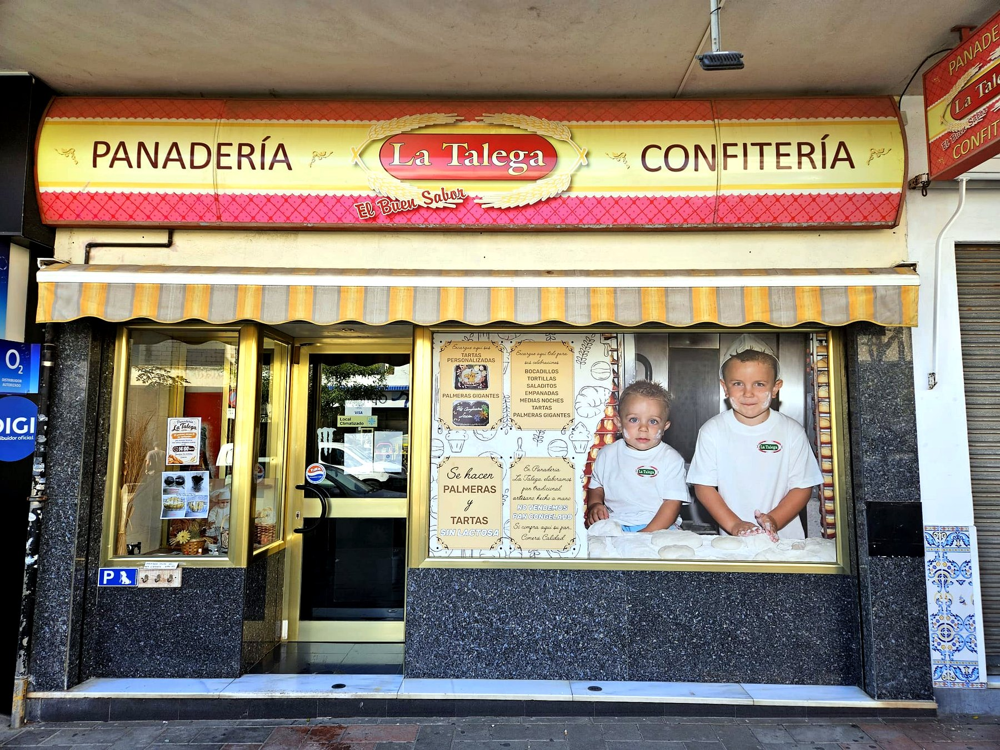
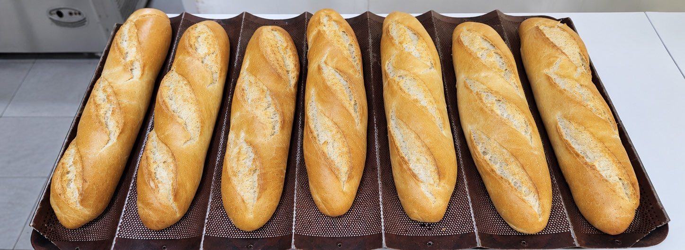
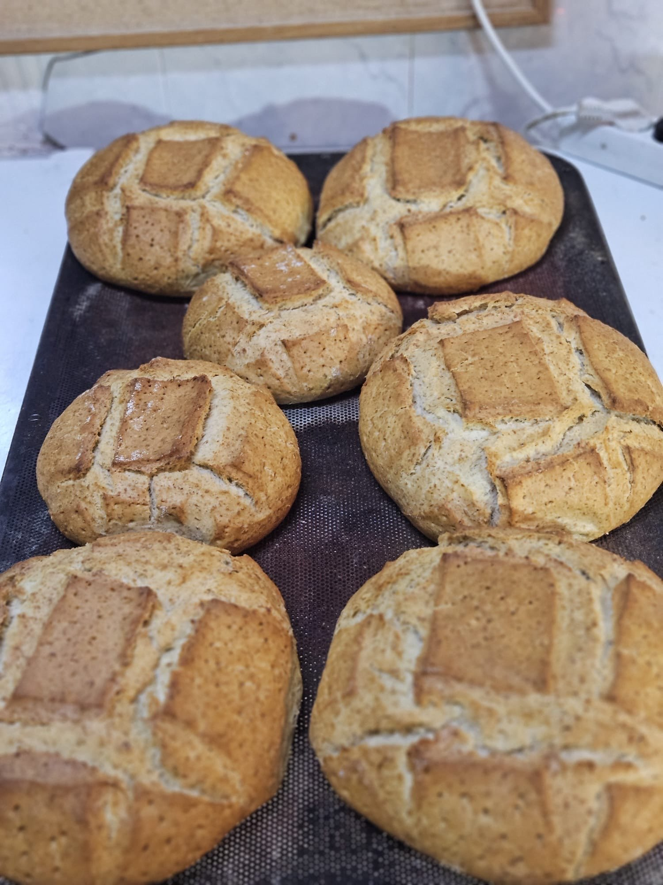
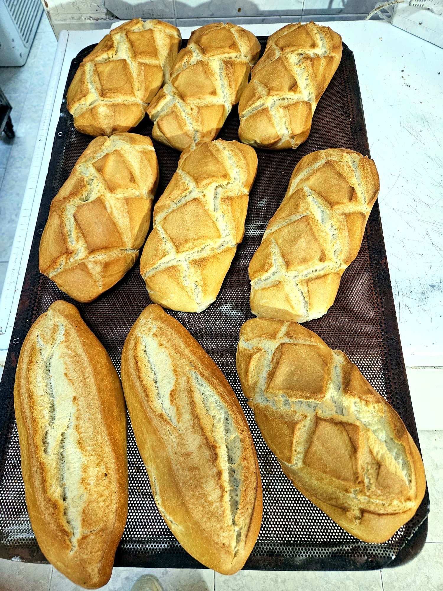
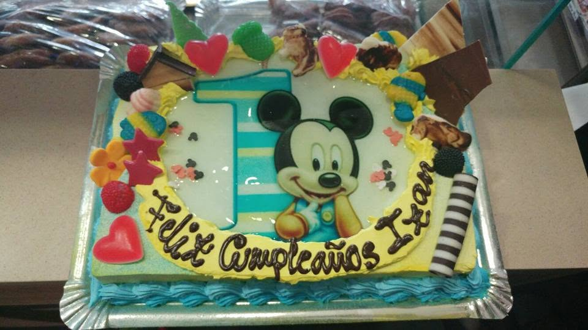
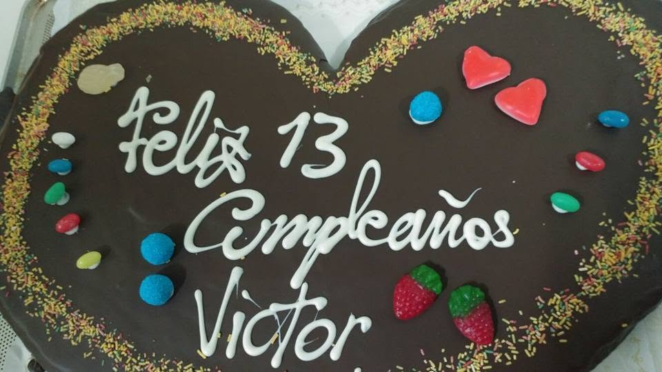
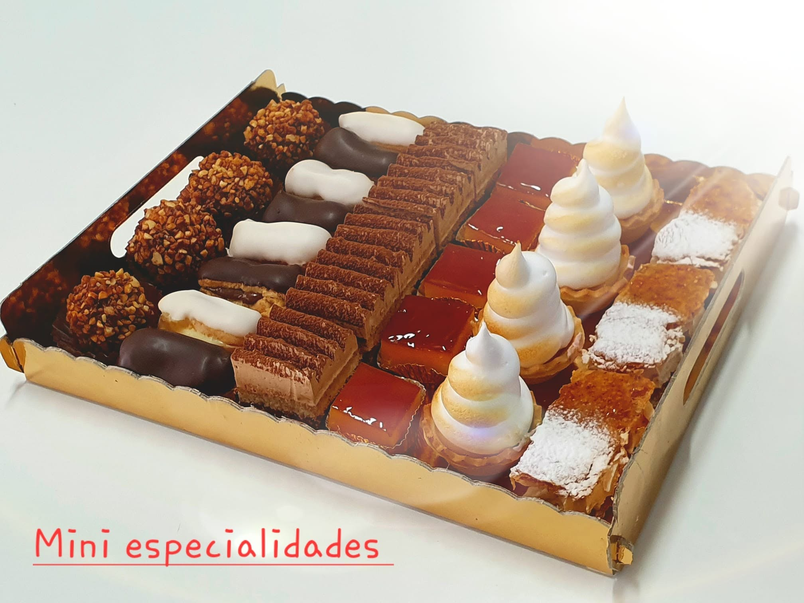
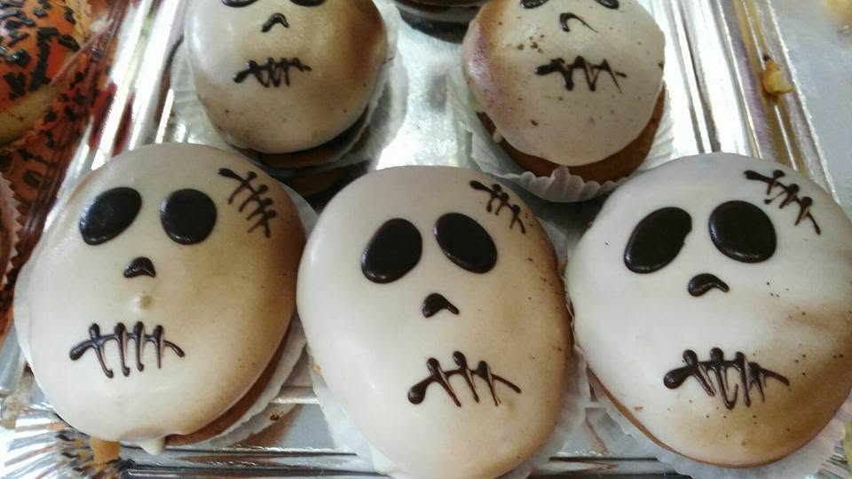
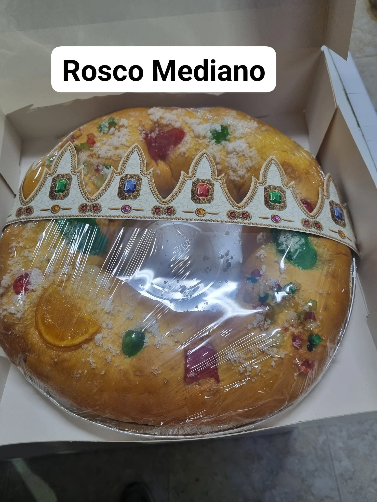

El pan de cada día, amasado a mano en el corazón de Málaga
Pan de masa madre, tartas a medida y la bollería de siempre, horneados cada mañana en Calle Antígona.
En La Talega hacemos pan de verdad: masa madre, fermentaciones largas y recetas que hemos ido cuidando con los años, pieza a pieza, cada mañana.

Cada barra sale del horno con su propia forma, su propio corte, hecha a mano.
Nos conocemos con los clientes y escuchamos lo que necesitan para cada celebración. Ponemos el mismo empeño en una barra de pan que en la tarta de un cumpleaños.
Tres oficios, un mismo mostrador
Pan de verdad, dulces para cada ocasión y la bollería de siempre.


Pan artesano
Barras, hogazas y panes especiales horneados a diario con masa madre y fermentaciones largas, para un pan con carácter de verdad.


Tartas personalizadas
Diseñamos la tarta a tu gusto para cada celebración: cumpleaños, bodas, comuniones o cualquier ocasión que merezca un dulce especial.

Bollería y confitería
Cruasanes, napolitanas, pastas de té y toda una selección de dulces tradicionales, elaborados con el mismo mimo de siempre.
De la fermentación al horno
Así es nuestro proceso para hacer el pan: cada pieza empieza como una masa en reposo, tomando forma poco a poco antes de entrar al horno.
El resultado: pan con la corteza justa y la miga que solo da el tiempo, sin prisas.
Dulces de temporada
A lo largo del año vamos vistiendo el mostrador según la fecha: Halloween, Navidad, Reyes y cada celebración tiene su propio dulce.

Halloween
Bollos rellenos decorados a mano con caritas de fantasma, para quienes celebran la noche más terrorífica del año.

Roscón de Reyes
Nuestro roscón de toda la vida, con fruta escarchada, en distintos tamaños para que no falte en tu mesa el 6 de enero.
Opiniones de nuestros clientes
Reseñas reales de quienes nos visitan, recogidas en nuestra ficha de Google.
Encantados con la variedad de pan y dulces. Sus palmeras sin azúcar ni lactosa son un acierto, y el trato de la casa no tiene precio.
Para muchos, los croissants de aquí están entre los mejores de Málaga. Las tartas de cumpleaños también dejan huella en los más pequeños.
Nada más entrar recibe el olor a pan recién horneado. El pan de pueblo y los bollos de mantequilla son un clásico que nunca falla.
Horario
Abiertos de lunes a viernes.
| Lunes a viernes | 7:00 – 19:00 |
| Sábados | Cerrado |
| Domingos y festivos | Cerrado |
Calle Antígona, 3
Málaga
¿Encargamos tu tarta?
Cuéntanos la ocasión, cuántos comensales sois y qué te apetece, y le damos forma en el horno.